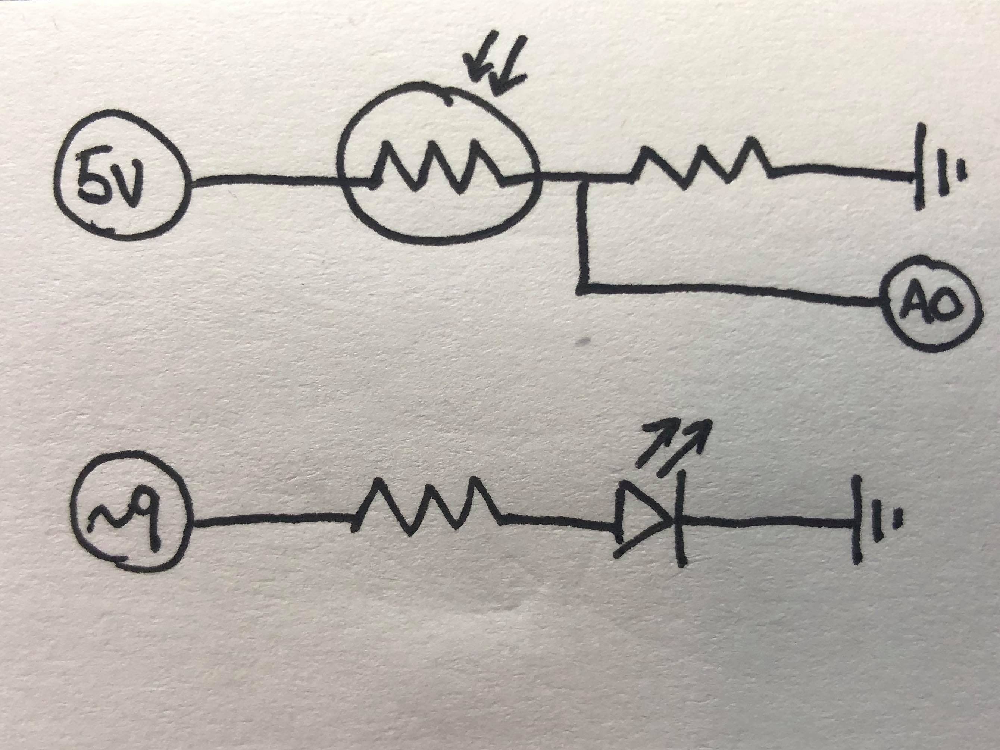
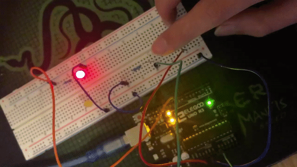

Jesse Du's Assignment 3!

A RGB LED with a resistor connected to digital pin 9; a photoresistor with a regular resistor separately connected to 5V, ground, and analog pin A0.

A red LED with a 220 Ohm resistor (R=V/I=(5-1.8)/0.025=128 Ohms) and a photoresistor with a 10 KOhm resistor; I chose 10K again because it is a high enough resistence so there would not be neccessary current wasted.

LED light dimming as I cover the photoresistor and lighting up again as I move my finger away.
Below is the Arduino code snippet:
const int analogInPin = A0; // Analog input pin that the photoresistor is attached to
const int analogOutPin = 9; // Analog output pin that the LED is attached to
int sensorValue = 0; // value read from the photoresistor
int outputValue = 0; // value output to the analog out
void setup() {
// initialize serial communications at 9600 bps:
Serial.begin(9600);
}
void loop() {
// read the analog in value
sensorValue = analogRead(analogInPin);
// map it to the range of the analog out
outputValue = map(sensorValue, 0, 1023, 0, 255);
// change the analog out value
analogWrite(analogOutPin, outputValue);
// print the results to the Serial Monitor:
Serial.print("sensor = ");
Serial.print(sensorValue);
Serial.print("\t output = ");
Serial.println(outputValue);
// wait 2 milliseconds before the next loop for the analog-to-digital
// converter to settle after the last reading:
delay(2);
}
//based on example code AnalogInOutSerial